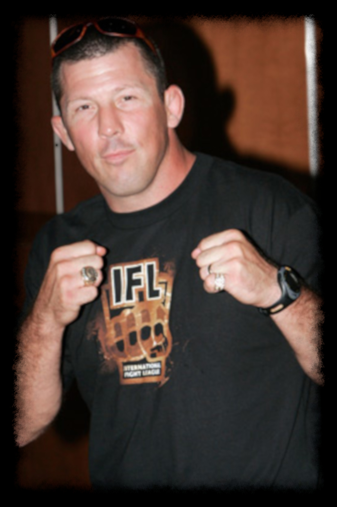
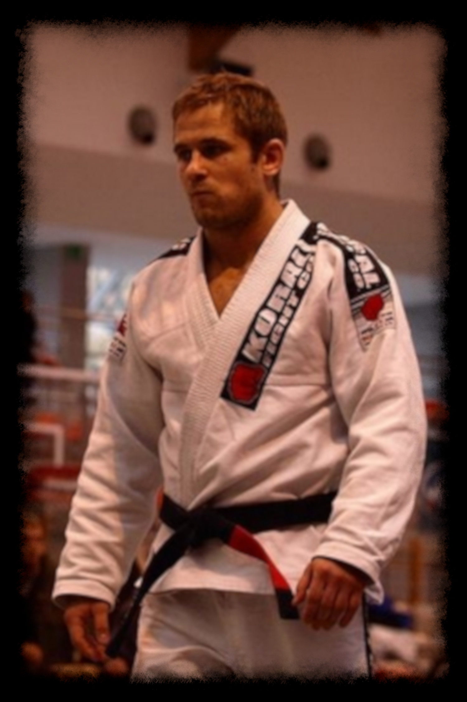
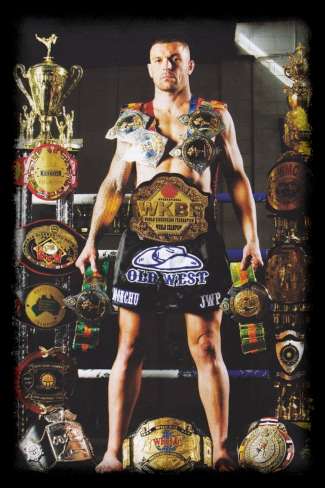
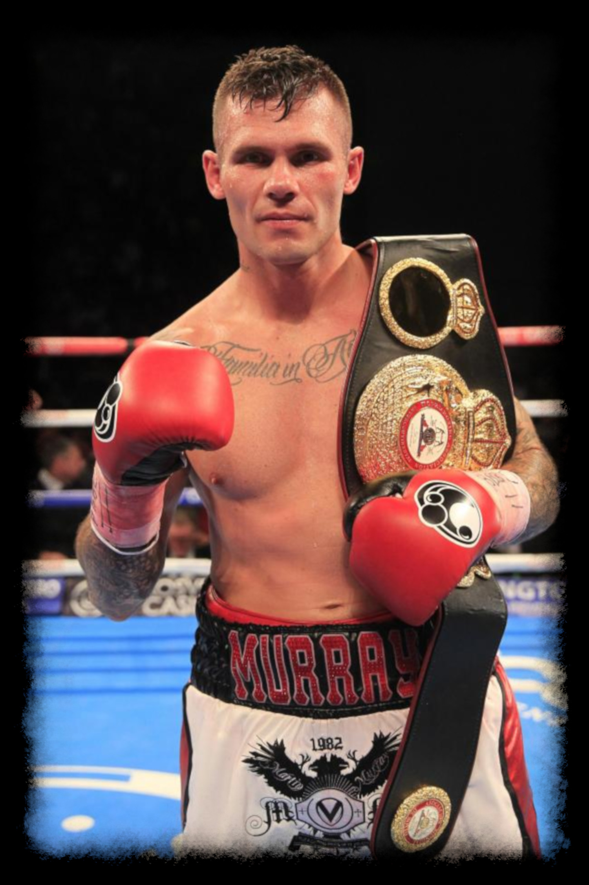
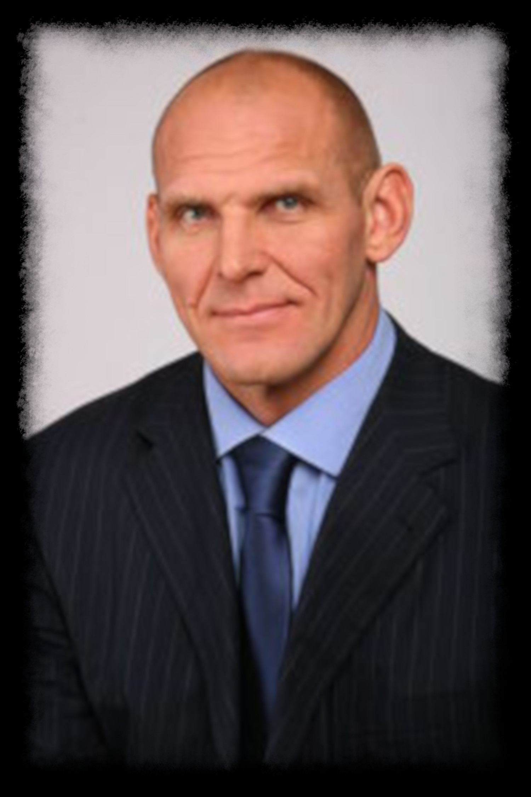
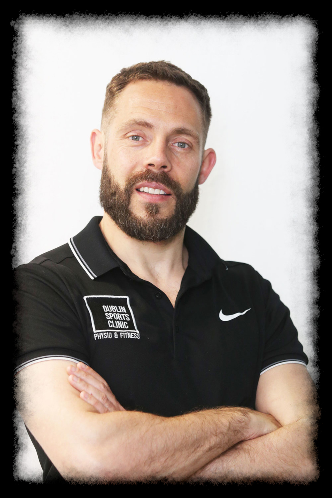

Rich Jones
Head Instructor
Rich is the founder and owner of Team Impact and currently holds a third degree black belt in Brazilian Jiu-Jitsu under Carlson Gracie Jr.
He has coached numerous athletes at an amateur and professional level in MMA, BJJ, Muay Thai and Boxing, including many of our current
instructors and active competitors. With over thirty years spent training and competing in various martial arts all over the world, he
possesses an unparalleled amount of knowledge and experience that he passionately shares with his students on a daily basis.

Ciaran Dempsey
Brazilian Jiu-Jitsu Instructor
Ciaran has been training in Brazilian Jiu-Jitsu under Rich since the beginning of Team Impact in 2006. He has enjoyed a decorated
competitive career spanning several years. Among his numerous achievements in BJJ, he won the Brown Belt IBBJF
Europeans at Roosterweight in both Gi and No-Gi in 2013, 2014 and 2015 and the Brown Belt IBJJF World Championships at Roosterweight in Gi in 2014. After over 10 years
of dedicated training and competitive success at a National and European Level, Ciaran received his BJJ Black Belt in 2017 under Carlson
Gracie Jr. during a visit to Ireland. Ciaran has now retired from competition and has dedicated himself to coaching, and teaches many of the
adult and kids BJJ classes at Team Impact.

Aaron Jennings
Muay Thai & Mixed Martial Arts Instructor
Aaron has been training in Muay Thai for over 15 years. He is an active and highly decorated competitor with a current professional
kickboxing record of 61-4 and has fought in many top professional kickboxing promotions all over the world such as
Glory,
Thai Fight and
Max Muay Thai. In 2011, Aaron
decided to venture into Mixed Martial Arts. He is currently signed with top promotion
Brave FC, holding an undefeated professional record of 3-0.

Michael Prendergast
Mixed Martial Arts & Brazilian Jiu-Jitsu Instructor
Michael started his martial arts journey with Ciaran under Rich back in 2006. Upon discovering a hidden talent for the art, Michael began
competing in (at that time, very few) Brazilian Jiu-Jitsu tournaments in the UK and the rest of Europe. Spurred on by his early success and
by coach Rich, Michael began training and competing in Mixed Martial Arts. Continued success on the both the national and European amateur
circuit led Michael to turn professional in 2014. He holds a current professional record of 7-1 is currently signed with top European
promotion Cage Warriors. Michael was awarded his BJJ Brown Belt in 2016. He is still an active competitor
in the Brazilian Jiu-Jitsu scene and has won multiple medals in both Gi and No-Gi Jiu-Jitsu at a National, European and World level at blue, purple and brown belt.

Carrie Canning
Women's Instructor
Carrie's martial arts journey began when she started training in Shotokan Karate when she was seven years old. At age 20 she received her
black belt in this art. Around the same time, she began training in Brazilian Jiu-Jitsu under Rich and currently holds a purple belt in BJJ.
Shortly after beginning her BJJ journey, Carrie started training in MMA. Carrie soon began competing in amateur MMA to great success,
culminating in her taking Gold 2 years in a row in the Women's 60kg category at the World IMMAF
(International Mixed Martial Arts Federation) Championships in 2010 & 2011. Nowadays, Carrie has since retired from competing, and has devoted herself to teaching Women's MMA and BJJ for
self-defence purposes here at Team Impact.

Aaron Murray
Boxing Instructor
Aaron has been boxing for over 20 years and brings a wealth of experience in the ‘sweet science’ to Team Impact. In his amateur career, "The Worry"
amassed a record of 130-17, winning a total of 8 All-Ireland titles, 3 European Titles and 1 World Title over the 76kg, 78kg, 80kg and 82kg weight
categories. He also boxed for Team Ireland in the 2012 Olympics, taking silver in the 78kg division. He turned pro in 2013, and has currently amassed a record of 9-1. He is now
signed with top UK promotion Matchroom Boxing, splitting his time between Ireland and the UK
teaching and training.

Pawel Grubinski
Wrestling Instructor
Pawel has been wrestling since he was five years old and had a highly decorated career in Freestyle and Greco-Roman wrestling spanning 15
years. He was selected for the Polish Olympic team in Freestyle Wrestling in the 2008 and 2012 Olympic Games, taking silver in the Men's 69kg
category. He retired from competition shortly after his second appearance in the games, moving to Ireland the year after. It was at this time
that he became acquainted with Rich. The two quickly became good friends, so much so that Pawel decided to relocate to Ennis and become the
wrestling coach at Team Impact, and has been here ever since.

Sean Reilly
Head Physio
Sean acquired a Master's Degree in Physiotherapy from University College Cork six years ago and has been a practicing physiotherapist
since that time. Prior to joining Team Impact, he worked his way up to becoming the head physio for Eircom League side Bohemians, and brings
a wealth of knowledge and experience to keep all of our members in peak physical condition.